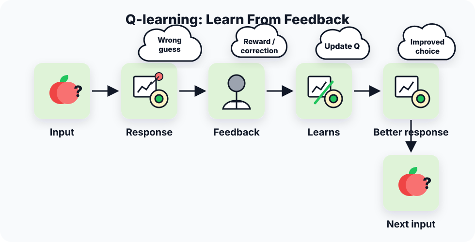
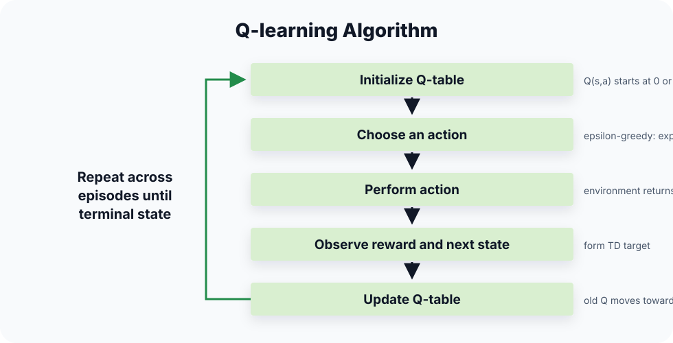
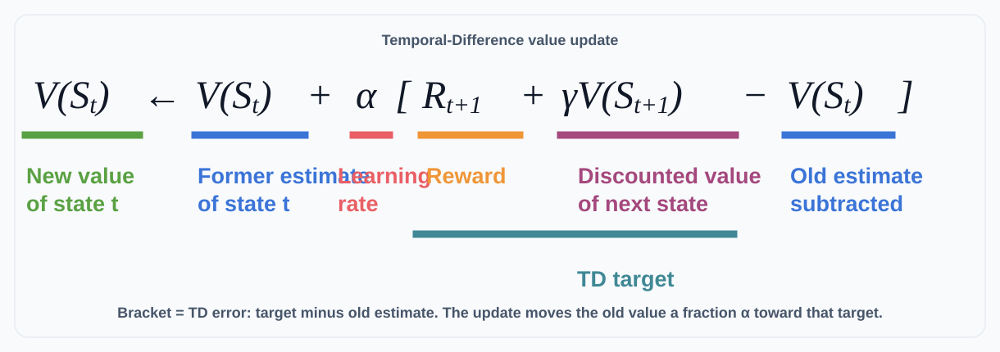

🎮 Q-learningQ-learning
Q-learning
1. Concept Understanding
Q-learning is an iterative, model-free, off-policy algorithm for approximating the optimal action-value function $Q^*(s,a)$ from sampled transitions $(s,a,r,s')$. It is model-free because it does not need the transition dynamics $P(s'\mid s,a)$ or reward function table $R(s,a)$.
Lecture 25 emphasizes the trajectory viewpoint: a trajectory is a sample, and each observed transition can update the current Q estimate through a Monte-Carlo / temporal-difference style moving average. Lecture 27 briefly recaps this before moving to practical LLM RL.
Formal view. Each transition performs a stochastic Bellman optimality backup: replace the unavailable expectation over all next states with one observed next state, then use $\max_{a'}Q(s',a')$ to aim directly at $Q^*$.


2. Plain-English Explanation
Keep a scoreboard $Q(s,a)$ for every action in every state. After trying an action, compare your old score with "reward now + best possible next score." Then move the old score a little toward that target.
It is off-policy because the target assumes you will act greedily in the next state, even if the data was collected by a messy exploratory policy.
3. Core Intuition
The target $r+\gamma\max_{a'}Q(s',a')$ is a one-step Bellman guess: immediate reward plus discounted best future value. The learning rate $\alpha$ makes the update an exponential moving average, giving newer samples more influence.
The max operator is the off-policy piece: it asks, "what would the greedy policy do next?" even if the observed transition came from an exploratory behavior policy such as $\epsilon$-greedy.
- Convergence: tabular Q-learning converges to $Q^*$ with probability 1 when every state-action pair is updated infinitely often and the learning rates decay appropriately, for example $\sum_t\alpha_t=\infty$ and $\sum_t\alpha_t^2<\infty$.
- Experience replay: because the update is off-policy, old transitions can be stored in a replay buffer and sampled again. This reduces correlation between updates and helps rare rewards propagate backward without rediscovering the same trajectory many times.
- Exploration is still required: off-policy means the target can be greedy; it does not mean the behavior policy may ignore unvisited actions forever.
4. Key Equations

TD value update: $V(S_t)\leftarrow V(S_t)+\alpha[R_{t+1}+\gamma V(S_{t+1})-V(S_t)]$ evaluates a state by bootstrapping from the next state's value.
Q-learning update: replace the state value with a state-action value and use the greedy next action: $Q(s,a)\leftarrow Q(s,a)+\alpha[r+\gamma\max_{a'}Q(s',a')-Q(s,a)]$.
- $y$ is the temporal-difference target, the value we want the old estimate to move toward.
- $r$ is the reward observed immediately after taking action $a$ in state $s$.
- $\gamma$ discounts future value; smaller $\gamma$ makes the agent care less about later rewards.
- $s'$ is the next state in the sampled transition.
- $\max_{a'}Q(s',a')$ is the best currently estimated value available from the next state.
What it does. The target is observed reward now plus discounted best estimated value of the next state.
- $Q(s,a)$ on the right side is the old estimate for the state-action pair just observed.
- $\alpha$ is the learning rate; it controls how much the new target overrides the old estimate.
- $y-Q(s,a)$ is the TD error: positive means the old estimate was too low, negative means it was too high.
- $\leftarrow$ means replace the table entry with the updated value.
What it does. Move the old Q estimate a fraction α toward the TD target. The bracket is the TD error.
- $Q'(s,a)$ is the updated value after applying the learning step.
- $(1-\alpha)Q(s,a)$ is the portion of the old estimate kept after the update.
- $\alpha(r+\gamma\max_{a'}Q(s',a'))$ is the portion contributed by the new TD target.
What it does. Same update as a weighted average: keep 1-α of the old estimate and mix in α of the new target.
What it does. After Q is learned, choose the action with highest estimated value in each state.
- $Q_\theta$ is a neural network approximation to the Q-function.
- $\theta$ are the online network parameters being trained; $\theta^-$ are the slower target-network parameters used to compute $y$.
- $\mathcal{B}$ is the replay buffer containing stored transitions.
- $\mathcal{L}(\theta)$ is the squared Bellman error: prediction minus TD target, squared and averaged over replay samples.
What it does. DQN turns Q-learning into supervised regression: the network prediction $Q_\theta(s,a)$ is trained to match a Bellman target.
What it does. Ordinary Q-learning uses the same noisy estimates to select and evaluate the max. Double Q-learning separates those two jobs to reduce overestimation.
5. Worked Examples
Suppose $Q(s,a)=2$, $r=1$, $\gamma=0.9$, $\max_{a'}Q(s',a')=4$, and $\alpha=0.5$.
If an exploratory behavior policy randomly chose the action in $s'$, Q-learning still uses $\max_{a'}Q(s',a')$ in the target. The target is greedy, so the method is off-policy.
In the combination-lock style HW problem, initializing all Q-values high makes untried actions look attractive. Failed actions get revised downward, pushing the agent toward unexplored actions and improving exploration.
Without replay, a sparse reward may only move one predecessor state backward each time the agent rediscovers the whole rare path. With replay, the stored successful trajectory can be backed up repeatedly, often from the end toward the start, so the reward signal reaches earlier decisions much faster.
6. Problem-Solving Tips
- Read off old $Q(s,a)$, reward $r$, discount $\gamma$, and next-state Q-values.
- Take the maximum over next-state actions.
- Compute target $y=r+\gamma\max Q(s',\cdot)$.
- Update old + $\alpha$(target - old).
- If $s'$ is terminal, use future value $0$ instead of $\max_{a'}Q(s',a')$.
- For Q-table trajectory practice, process transitions in the given order; each line updates only the visited $(s,a)$ entry.
- For value-bound questions, reuse the Bellman geometric-series bound: if all rewards are at most $R_{\max}$, then $\max_{s,a}Q^*(s,a)\le R_{\max}/(1-\gamma)$.
- For conceptual questions, say model-free + off-policy + needs exploration.
7. Common Mistakes
- Calling Q-learning on-policy. It is off-policy because of the max target.
- Taking the max over current-state actions instead of next-state actions.
- Forgetting the learning rate and replacing the old Q entirely.
- Assuming unvisited state-action pairs can be learned. Exploration is required.
- Confusing model-free learning with not needing data; model-free still needs trajectories.
- Forgetting maximization bias: the maximum of noisy Q estimates tends to overestimate true value.
The same max operator that makes Q-learning off-policy can create maximization bias, because noisy high estimates are more likely to be selected by a maximum. Double Q-learning reduces this by using one Q-function to choose the action and another Q-function to evaluate it.
8. Exam Focus
- Write both Q-learning update forms from memory.
- Explain why it is model-free and off-policy.
- Hand-compute one update, or a short sequence of Q-table updates, with numbers.
- Explain why optimistic initialization encourages exploration.
- State the tabular convergence conditions: keep visiting every state-action pair and decay $\alpha$ appropriately.
- Recognize DQN tools: replay buffer, target network, and squared Bellman error.
- Explain max bias and the select-versus-evaluate idea of Double Q-learning.
9. Quick Checklist
Last-minute recall
- Sample: $(s,a,r,s')$.
- Target: $r+\gamma\max_{a'}Q(s',a')$.
- Update: $Q\leftarrow Q+\alpha(\text{target}-Q)$.
- Off-policy: greedy target, arbitrary behavior data.
- Model-free: no known $P$ or $R$ table.
- DQN: neural $Q_\theta$, replay buffer, target network.
- Double Q: reduce max overestimation.
- Value bound: $Q^*\le R_{\max}/(1-\gamma)$ when rewards are bounded above by $R_{\max}$.
Q-learning
1. 概念理解
Q-learning 是一种 iterative、model-free、off-policy algorithm，用采样 transition $(s,a,r,s')$ 去近似最优动作价值函数 $Q^*(s,a)$。它是 model-free，因为不需要已知转移概率 $P(s'\mid s,a)$ 或奖励函数表 $R(s,a)$。
Lecture 25 强调 trajectory 视角：trajectory 是样本，每个观察到的 transition 都可以用 Monte-Carlo / temporal-difference 风格的 moving average 更新当前 Q 估计。Lecture 27 会快速 recap 这点，再进入 LLM RL 的 practical algorithms。
Formal view. 每个 transition 都是在做一次 stochastic Bellman optimality backup：用一个真实观察到的 next state 替代完整 expectation，再用 $\max_{a'}Q(s',a')$ 直接朝 $Q^*$ 学。
2. 大白话理解
给每个状态-动作对维护一个分数 $Q(s,a)$。试完一个动作后，把旧分数和“现在奖励 + 下一状态最好分数”比较，然后把旧分数往目标挪一点。
它是 off-policy，因为目标假设下一状态会选 greedy 动作，即使数据本身来自一个乱探索的行为策略。
3. 核心直觉
目标 $r+\gamma\max_{a'}Q(s',a')$ 是一步 Bellman 估计：即时奖励 + 折扣后的最佳未来价值。学习率 $\alpha$ 让更新成为指数滑动平均，新样本权重更大。
max operator 是 off-policy 的关键：它问的是“如果下一步按 greedy policy 走，会拿到多少价值？”即使当前 transition 来自 $\epsilon$-greedy 这样的 exploratory behavior policy。
- Convergence: tabular Q-learning 在每个 state-action pair 被无限次更新、learning rate $\alpha$ 合理衰减时，会以 probability 1 收敛到 $Q^*$；典型条件是 $\sum_t\alpha_t=\infty$ 且 $\sum_t\alpha_t^2<\infty$。
- Experience replay: 因为 update 是 off-policy，旧 transitions 可以存进 replay buffer 反复抽样训练。这样能降低 updates 的相关性，也能让 rare reward 不必每次都重新跑完整 trajectory 才往前传播。
- Exploration still matters: off-policy 只说明 target 可以 greedy，不代表 behavior policy 可以永远不探索未访问动作。
4. 关键公式
TD value update: $V(S_t)\leftarrow V(S_t)+\alpha[R_{t+1}+\gamma V(S_{t+1})-V(S_t)]$ 是在更新 state 本身的 value，用 next state 的 value 做 bootstrap。
Q-learning update: 把 state value 换成 state-action value，并在 next state 里取 greedy action：$Q(s,a)\leftarrow Q(s,a)+\alpha[r+\gamma\max_{a'}Q(s',a')-Q(s,a)]$。
- $y$ 是 temporal-difference target，也就是旧估计要靠近的目标值。
- $r$ 是在 state $s$ 做 action $a$ 后本次观察到的 immediate reward。
- $\gamma$ 是 discount factor，越小表示越不重视远期 reward。
- $s'$ 是 sampled transition 里的 next state。
- $\max_{a'}Q(s',a')$ 是下一状态里当前估计最好的 future value。
这个公式在做什么？ TD target 表示：现在观察到的奖励 + 下一状态里当前估计的最佳未来价值。
- 右边的 $Q(s,a)$ 是这个 state-action pair 的旧估计。
- $\alpha$ 是 learning rate，控制新 target 覆盖旧估计的力度。
- $y-Q(s,a)$ 是 TD error：正数表示旧估计偏低，负数表示旧估计偏高。
- $\leftarrow$ 表示用更新后的数值替换原来的 table entry。
这个公式在做什么？ 把旧 Q 估计朝 TD target 移动 α 的比例。中括号 y-Q(s,a) 是 TD error。
- $Q'(s,a)$ 是做完这一步后的 updated Q value。
- $(1-\alpha)Q(s,a)$ 是保留下来的旧估计部分。
- $\alpha(r+\gamma\max_{a'}Q(s',a'))$ 是新 TD target 贡献的部分。
这个公式在做什么？ 这是同一个更新的加权平均写法：保留 1-α 的旧估计，混入 α 的新 target。
这个公式在做什么？ 学到 Q 后，每个 state 选择估计价值最高的 action。
- $Q_\theta$ 是 neural network 版的 Q-function approximation。
- $\theta$ 是正在训练的 online network 参数；$\theta^-$ 是更新更慢的 target network 参数，用来计算 $y$。
- $\mathcal{B}$ 是 replay buffer，里面存 old transitions。
- $\mathcal{L}(\theta)$ 是 squared Bellman error：prediction 和 TD target 的差平方后，对 replay samples 取平均。
这个公式在做什么？ DQN 把 Q-learning 变成 supervised regression：让网络预测 $Q_\theta(s,a)$ 去拟合 Bellman target。
这个公式在做什么？ 普通 Q-learning 用同一组 noisy estimates 同时选择和评估 max，容易 overestimate。Double Q-learning 把“选动作”和“估价值”拆开，降低 maximization bias。
5. 例题精解
设 $Q(s,a)=2$，$r=1$，$\gamma=0.9$，$\max_{a'}Q(s',a')=4$，$\alpha=0.5$。
即使探索策略在 $s'$ 随机选动作，Q-learning 的 target 仍然用 $\max_{a'}Q(s',a')$。目标是 greedy 的，所以是 off-policy。
Combination-lock 类题中，把所有 Q 初始得很高，会让未尝试动作看起来诱人。失败动作被下调后，agent 会被推向其他未探索动作，从而改善探索。
没有 replay 时，sparse reward 往往要等 agent 再次撞完整条 rare path，才能往前多传播一点。用了 replay 后，已经存下来的 successful trajectory 可以反复 backup，直觉上从终点往起点更新，所以 reward signal 更快传到 earlier decisions。
6. 题型与解题步骤
- 读出旧 $Q(s,a)$、奖励 $r$、折扣 $\gamma$、下一状态的 Q 值。
- 对下一状态动作取最大。
- 算 target：$y=r+\gamma\max Q(s',\cdot)$。
- 用 old + $\alpha$(target - old) 更新。
- 如果 $s'$ 是 terminal state，future value 取 0，不再加 $\max_{a'}Q(s',a')$。
- Q-table 轨迹手算题按题目给的 transition 顺序更新；每一行只改被访问到的 $(s,a)$。
- value bound 题复用 Bellman 的 geometric-series bound：若所有 reward 至多 $R_{\max}$，则 $\max_{s,a}Q^*(s,a)\le R_{\max}/(1-\gamma)$。
- 概念题回答：model-free + off-policy + 需要 exploration。
7. 常见错误
- 把 Q-learning 说成 on-policy；它因 max target 而 off-policy。
- max 取在当前状态动作上，而不是下一状态动作上。
- 忘记学习率，直接用 target 覆盖旧 Q。
- 以为没访问过的 state-action pair 也能学到；必须探索。
- 混淆 model-free 与不需要数据；model-free 仍然需要 trajectories。
- 忽略 maximization bias：noisy Q estimates 取 max 后，通常会偏高估计 true value。
让 Q-learning off-policy 的同一个 max operator，也可能带来 maximization bias：噪声偏高的估计更容易被 max 选中。Double Q-learning 用一个 Q-function 选 action，另一个 Q-function 估 value，从而减少这种 overestimation。
8. 考试重点
- 默写 Q-learning 两种更新形式。
- 解释 model-free 和 off-policy。
- 手算一次更新，或一小段 Q-table trajectory updates。
- 解释 optimistic initialization 为什么促进探索。
- 会说 tabular convergence 条件：每个 state-action pair 持续访问，$\alpha$ 合理衰减。
- 识别 DQN 三件套：replay buffer、target network、squared Bellman error。
- 解释 max bias，以及 Double Q-learning 的 select / evaluate 分离。
9. 速记清单
最后一刻能默
- 样本：$(s,a,r,s')$。
- Target：$r+\gamma\max_{a'}Q(s',a')$。
- Update：$Q\leftarrow Q+\alpha(\text{target}-Q)$。
- Off-policy：greedy target，可用任意 behavior data。
- Model-free：不需要已知 $P$ 或 $R$ 表。
- DQN：neural $Q_\theta$、replay buffer、target network。
- Double Q：降低 max overestimation。
- Value bound：reward 被 $R_{\max}$ 上界住时，$Q^*\le R_{\max}/(1-\gamma)$。